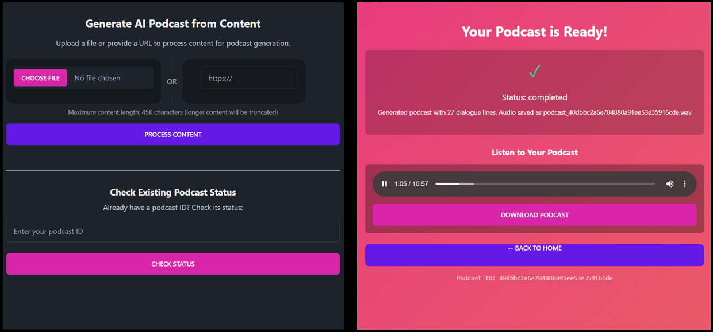
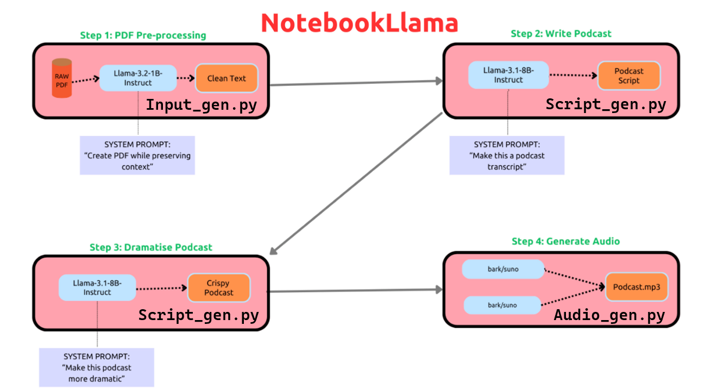

🚀 Try the Live app HERE
Introduction
Creating podcasts is typically labor-intensive, requiring content preparation, recording sessions, and audio editing. But what if we could automate this process? This article explores the development of a podcast generator that transforms ordinary text into engaging audio conversations between two hosts. The system takes various inputs (PDFs, websites, text, even audio), generates a conversational script, and produces a natural-sounding podcast with minimal human intervention.
This project builds upon the Llama cookbook’s NotebookLlama example, focusing on production-grade implementation with Modal Labs. The goal was to create a system that generates podcasts with natural speech patterns, consistent voices, and proper discussion flow.
Please see the Github for samples of audio generated HERE
Let’s dive into how it works, the challenges we faced, and how we solved them.
Architecture Overview: Why Three Separate Modules?
The podcast generator follows a three-stage pipeline built on Modal Labs’ cloud infrastructure:

Each module handles a distinct part of the process:
- Content Ingestion (
input_gen.py): Accepts various inputs, manages the web UI, and orchestrates the generation process - Script Generation (
scripts_gen.py): Transforms raw content into natural conversational scripts - Audio Generation (
audio_gen.py): Converts scripts to realistic audio using Bark TTS
But why split the system into three modules instead of a single monolithic application? There are several compelling reasons:
Resource Optimization: Each stage has different computational requirements. Input processing needs minimal resources, script generation benefits from smaller GPUs, while audio generation demands high-end GPUs. Separating these concerns allows us to allocate exactly what each stage needs.
Fault Tolerance: If one stage fails, we don’t need to restart the entire pipeline. For instance, if audio generation encounters an issue, we can retry just that stage without regenerating the script.
Development Flexibility: Team members can work on different components simultaneously without conflicts. During development, we could iterate on the audio generation while the script generation remained stable.
Scalability: We can scale each component independently based on demand. For instance, we might deploy multiple audio generation instances if that becomes the bottleneck.
As Meta’s NotebookLlama project demonstrated, this separation of concerns is crucial for building production-ready AI applications.
Let’s look at how we implemented this architecture using Modal Labs:
import modal
from input_gen import app as input_app
from scripts_gen import app as script_app
from audio_gen import app as audio_app
app = modal.App("multi-file-podcast")
# Ensure all components share the same persistent storage
shared_volume = modal.Volume.lookup("combined_volume")
# Compose the full application from individual modules
app.include(input_app)
app.include(script_app)
app.include(audio_app)This composition pattern allows us to maintain modular code while deploying a unified application. Modal Labs handles the container orchestration, network communication, and GPU allocation, letting us focus on application logic.
Content Ingestion: Flexible Input Processing
The first challenge was handling diverse input formats. To solve this, we implemented a flexible class hierarchy with a common interface:
class BaseIngestor:
"""Base class for all ingestors"""
def validate(self, source: str) -> bool:
pass
def extract_text(self, source: str, max_chars: int = MAX_CONTENT_CHARS) -> Optional[str]:
pass
def truncate_with_warning(self, text: str, max_chars: int) -> str:
"""Intelligently truncate text with warning message"""
if len(text) <= max_chars:
return text
truncated = text[:max_chars]
print(f"⚠️ Content truncated from {len(text)} to {max_chars} characters")
# Add an explanatory note at the end
truncation_note = "\n\n[Note: The original content was truncated due to length limitations.]"
truncated = truncated[:max_chars - len(truncation_note)] + truncation_note
return truncatedWe then implemented specialized processors for each input type:
class PDFIngestor(BaseIngestor):
"""PDF ingestion - core functionality"""
def validate(self, file_path: str) -> bool:
if not os.path.exists(file_path):
print(f"Error: File not found at path: {file_path}")
return False
if not file_path.lower().endswith('.pdf'):
print("Error: File is not a PDF")
return False
return True
def extract_text(self, file_path: str, max_chars: int = MAX_CONTENT_CHARS) -> Optional[str]:
if not self.validate(file_path):
return None
try:
with open(file_path, 'rb') as file:
pdf_reader = PyPDF2.PdfReader(file)
num_pages = len(pdf_reader.pages)
print(f"Processing PDF with {num_pages} pages...")
extracted_text = []
total_chars = 0
for page_num in range(num_pages):
page_text = pdf_reader.pages[page_num].extract_text()
if page_text:
extracted_text.append(page_text)
total_chars += len(page_text)
print(f"Processed page {page_num + 1}/{num_pages}, total chars: {total_chars}")
if total_chars > max_chars * 1.1: # Read slightly more than needed
print(f"Reached character limit at page {page_num + 1}/{num_pages}")
break
full_text = "\n".join(extracted_text)
return self.truncate_with_warning(full_text, max_chars)
except PyPDF2.PdfReadError:
print("Error: Invalid or corrupted PDF file")
return None
except Exception as e:
print(f"An unexpected error occurred: {str(e)}")
return NoneWe also implemented similar classes for websites (using LangChain’s WebBaseLoader), audio files (using Whisper for transcription), and plain text files.
To select the appropriate ingestor, we used the factory pattern:
class IngestorFactory:
"""Factory to create appropriate ingestor based on input type"""
@staticmethod
def get_ingestor(input_type: str, **kwargs) -> Optional[BaseIngestor]:
input_type = input_type.lower()
if input_type == "pdf":
return PDFIngestor()
elif input_type == "website":
return WebsiteIngestor()
elif input_type == "audio":
return AudioIngestor(**kwargs)
elif input_type == "text":
return TextIngestor()
else:
print(f"Unsupported input type: {input_type}")
return NoneThis pattern provides several advantages: 1. Extensibility: Adding new input types (like DOCX files) just requires implementing a new ingestor class 2. Encapsulation: Each ingestor handles its own validation and processing logic 3. Separation of Concerns: The core application doesn’t need to understand how different formats are processed
The User Interface: Creating a Responsive Experience
For the user interface, we chose FastHTML, a modern Python-based framework for building web applications. FastHTML combines the simplicity of HTML templates with the power of Python, making it perfect for rapid development.
The UI includes: 1. A file upload interface with support for various formats 2. A progress tracking system with real-time updates 3. An audio player for the finished podcast
Here’s how we implemented the home page:
@rt("/")
def homepage():
"""Render upload form with status checker"""
# DaisyUI styled file input
upload_input = Input(
type="file",
name="content",
accept=".pdf,.txt,.md,.mp3,.wav,.m4a,.flac",
required=False,
cls="file-input file-input-secondary w-full"
)
# DaisyUI styled URL input with prefix label
url_input_container = Div(
Span(cls="bg-base-300 px-3 py-2 rounded-l-lg"),
Input(
type="text",
name="url",
placeholder="https://",
cls="grow px-3 py-2 bg-base-300 rounded-r-lg focus:outline-none"
),
cls="flex items-center w-full"
)
# Side-by-side layout with divider
side_by_side = Div(
# Left card - File upload
Div(
Div(
upload_input,
cls="grid place-items-center p-4"
),
cls="card bg-base-300 rounded-box grow"
),
# Divider
Div("OR", cls="divider divider-horizontal"),
# Right card - URL input
Div(
Div(
url_input_container,
cls="grid place-items-center p-4"
),
cls="card bg-base-300 rounded-box grow"
),
cls="flex w-full"
)
# Add loading spinner with JavaScript
loading_script = Script("""
document.addEventListener('htmx:beforeRequest', function(evt) {
if (evt.target.matches('form')) {
// Find the submit button
var btn = evt.target.querySelector('button[type="submit"]');
if (btn) {
// Save the original text
btn.dataset.originalText = btn.textContent;
// Replace with loading spinner
btn.innerHTML = '<span class="loading loading-spinner loading-lg text-secondary"></span>';
btn.disabled = true;
}
}
});
document.addEventListener('htmx:afterRequest', function(evt) {
if (evt.target.matches('form')) {
// Find the submit button
var btn = evt.target.querySelector('button[type="submit"]');
if (btn && btn.dataset.originalText) {
// Restore original text
btn.innerHTML = btn.dataset.originalText;
btn.disabled = false;
}
}
});
""")
upload_form = Form(
side_by_side,
content_info,
process_button,
loading_script,
action="/inject",
method="post",
enctype="multipart/form-data",
id="upload-form",
hx_boost="true", # Use HTMX to enhance the form
hx_indicator="#process-button", # Show loading state on this element
cls="mb-6"
)
# Status checker form and other UI components...
# ...Why use HTMX and JavaScript for a loading spinner instead of pure FastHTML? We found that direct DOM manipulation provided the most reliable user experience for dynamic elements like loading indicators. This approach ensures users receive immediate feedback when submitting large files, which can take time to upload and process.
Script Generation: The Heart of the System
The script generation module converts raw content into engaging podcast-style conversations. This is perhaps the most critical part of the system, as it determines the quality and naturalness of the resulting podcast.
Why Two-Step Generation?
Rather than generating the final script in one go, we implemented a two-step process:
# Step 2: Generate initial script with first prompt
print("Generating initial script...")
prompt_1 = SYSTEM_PROMPT + "\n\n" + source_text
first_draft = generation_pipe(prompt_1)[0]["generated_text"]
# Step 3: Rewrite with disfluencies using second prompt
print("Adding natural speech patterns...")
prompt_2 = REWRITE_PROMPT + "\n\n" + first_draft
final_text = generation_pipe(prompt_2)[0]["generated_text"]This approach stemmed from experimentation with the NotebookLlama project, which showed that separating content generation from speech pattern enhancement produced more natural results. The first step focuses on organizing information into a coherent conversation, while the second step adds the natural speech patterns that make it sound like a real podcast.
Crafting the Perfect Prompts
The quality of the generated script heavily depends on the prompts we provide. Here’s the system prompt for the initial generation:
SYSTEM_PROMPT = """
You are a world-class podcast writer, having ghostwritten for top shows like Joe Rogan, Lex Fridman, and Tim Ferris.
Your job is to write a lively, engaging script with two speakers based on the text I provide.
Speaker 1 leads the conversation, teaching Speaker 2, giving anecdotes and analogies.
Speaker 2 asks follow-up questions, gets excited or confused, and interrupts with umm, hmm occasionally.
IMPORTANT LENGTH CONSTRAINTS:
- Create a podcast script with EXACTLY 12-15 exchanges between speakers.
- The entire podcast should be about 5-7 minutes when read aloud.
- Keep the conversation focused and concise while maintaining engagement.
- If the source text is very long, focus on the most important and interesting aspects.
ALWAYS START YOUR RESPONSE WITH 'SPEAKER 1' and a colon.
PLEASE DO NOT GIVE OR MENTION THE SPEAKERS BY NAME.
Keep the conversation extremely engaging, welcome the audience with a fun overview, etc.
Only create ONE EPISODE of the podcast.
The speakers discussing the topic as external commentators.
"""And here’s the rewrite prompt that transforms it into natural speech:
REWRITE_PROMPT = """
You are an Oscar-winning screenwriter rewriting a transcript for an AI Text-To-Speech Pipeline.
Make it as engaging as possible, Speaker 1 and 2 will be using different voices.
IMPORTANT LENGTH CONSTRAINTS:
- The final script should be EXACTLY 12-15 exchanges between speakers.
- The entire podcast should be about 5-7 minutes when read aloud.
It should be a real podcast with every fine nuance documented in as much detail as possible. Welcome the listeners with a super fun overview and keep it really catchy and almost borderline click bait
Please re-write to make it as characteristic as possible
For both Speakers use the following disfluencies FREQUENTLY AS MUCH AS POSSIBLE, umm, hmm, [laughs], [sighs], [laughter], [gasps], [clears throat], — for hesitations, CAPITALIZATION for emphasis. BUT ONLY THESE OPTIONS FOR EXPRESSIONS
Do not use [excitedly], [trailing off)], [interrupting], [pauses] or anything else that is NOT an outlined above disfluency for expression.
Return your final answer as a Python LIST of (Speaker, text) TUPLES ONLY, NO EXPLANATIONS, e.g.
Dont add "quotation marks" within the script dialogue.
IT WILL START DIRECTLY WITH THE LIST AND END WITH THE LIST NOTHING ELSE
[
("Speaker 1", "Hello, and welcome..."),
("Speaker 2", "Hmm, that is fascinating!")
]
IMPORTANT Your response must be a valid Python list of tuples. STRICTLY RETURN YOUR RESPONSE AS A LIST OF TUPLES
"""Why request a specific output format (list of tuples)? This structured format makes it easy to process in subsequent stages. It also allows us to associate each line of dialogue with the correct speaker, which is crucial for voice assignment in the audio generation phase.
The prompt engineering was refined through extensive experimentation. We found that: 1. Being specific about speech patterns yielded more natural results 2. Explicitly requesting the list of tuples format made parsing more reliable 3. Limiting the script length prevented excessive generation time
The Quote Normalization Problem
One unexpected challenge we encountered was the inconsistent handling of quotation marks in the generated scripts. This seemingly minor issue caused significant problems in the audio generation, with Bark often inserting long pauses when encountering inconsistent quote formats.
To address this, we implemented a thorough normalization function:
def normalize_script_quotes(script):
"""Normalize quotes in the script while preserving contractions."""
normalized_script = []
for speaker, text in script:
# Process text for each speaker-text pair
# Temporarily replace contractions with a placeholder to protect them
text = re.sub(r'(\w)\'(\w)', r'\1APOSTROPHE\2', text)
# Convert all remaining quotes to one style
text = text.replace('"', '"').replace("'", '"')
# Restore contractions
text = text.replace('APOSTROPHE', "'")
# Apply disfluencies conversion
text = convert_disfluencies(text)
normalized_script.append((speaker, text))
return normalized_scriptThis function handles the delicate task of standardizing quotation marks while preserving apostrophes in contractions (like “don’t” and “can’t”). This subtle but crucial processing step dramatically improved audio quality by eliminating unexpected pauses.
Converting Disfluencies for TTS
Another critical aspect was properly formatting speech disfluencies (like “hmm,” “umm,” and “[laughs]”) for the TTS system:
def convert_disfluencies(text):
"""
Convert parenthesized expressions like (laughs) to bracketed [laughs]
for proper TTS rendering.
"""
# List of common disfluencies to check for
disfluencies = [
"laughs", "sighs", "laughter", "gasps", "clears throat",
"sigh", "laugh", "gasp", "chuckles", "snorts",
"hmm", "umm", "uh", "ah", "er", "um"
]
# Convert (laughs) to [laughs]
for disfluency in disfluencies:
# Look for various formats and convert them
text = re.sub(r'\((' + disfluency + r')\)', r'[\1]', text, flags=re.IGNORECASE)
text = re.sub(r'<(' + disfluency + r')>', r'[\1]', text, flags=re.IGNORECASE)
# Also match when there's text inside
text = re.sub(r'\(([^)]*' + disfluency + r'[^)]*)\)', r'[\1]', text, flags=re.IGNORECASE)
return textThis function converts various formats like “(laughs)” or “
Audio Generation: Bringing Scripts to Life
The final and most computationally intensive part of the pipeline is transforming the text script into audio. This presented several significant challenges:
- Bark’s 13-Second Limitation: Bark TTS can only generate about 13 seconds of audio per invocation
- Maintaining Voice Consistency: Ensuring each speaker maintains the same voice throughout
- Computational Efficiency: Optimizing for faster generation without sacrificing quality
- Distributed Processing: Coordinating GPU resources across multiple containers
Overcoming Bark’s 13-Second Limitation
Inspired by Bark’s long-form generation notebook, we implemented a sophisticated approach that splits text into sentences and processes them individually:
def generate_speaker_audio(speaker_lines: List[Tuple[int, str]],
speaker: str,
injection_id: str = None) -> List[Tuple[int, np.ndarray, int]]:
"""Generate audio for all lines from a single speaker with progress updates"""
preload_models() # Ensure Bark model is loaded
# Setup voice consistency with RNG seed
voice_state_key = f"{injection_id}_{speaker}" if injection_id else None
if voice_state_key and voice_states.contains(voice_state_key):
seed = voice_states.get(voice_state_key)
print(f"Using saved seed {seed} for {speaker}")
else:
speaker_num = 1 if speaker == "Speaker 1" else 2
seed = np.random.randint(10000 * speaker_num, 10000 * (speaker_num + 1) - 1)
if voice_state_key:
voice_states[voice_state_key] = seed
print(f"Created new seed {seed} for {speaker}")
# Set seed for consistent voice
np.random.seed(seed)
torch.manual_seed(seed)
# Process each line for this speaker
results = []
for i, (line_idx, text) in enumerate(tqdm(speaker_lines, desc=f"Generating {speaker} audio")):
# Process disfluencies in the text
text = convert_disfluencies(text)
sentences = sentence_splitter(preprocess_text(text))
all_audio = []
chunk_silence = np.zeros(int(0.1 * SAMPLE_RATE), dtype=np.float32)
for i, sent in enumerate(sentences):
semantic_tokens = generate_text_semantic(
sent,
history_prompt=voice_preset,
temp=text_temp,
min_eos_p=0.05,
)
audio_array = semantic_to_waveform(
semantic_tokens,
history_prompt=voice_preset,
temp=waveform_temp,
)
all_audio.append(audio_array)
if i < len(sentences) - 1: # Don't add silence after the last sentence
all_audio.append(chunk_silence)
if not all_audio:
line_audio = np.zeros(24000, dtype=np.float32)
else:
line_audio = np.concatenate(all_audio, axis=0)
# Store with original index for reassembly
results.append((line_idx, line_audio, SAMPLE_RATE))
return resultsInstead of using Bark’s high-level generate_audio() function, we leveraged the lower-level generate_text_semantic() and semantic_to_waveform() functions. This gave us finer control over the generation process, particularly for managing voice consistency and preventing hallucinations at the end of sentences.
We also carefully tuned parameters like temp (temperature) and min_eos_p (minimum end-of-sentence probability) based on experimentation:
# Generation parameters
text_temp = 0.6 # Lower value = more predictable text
waveform_temp = 0.6 # Lower value = more consistent audioSpeaker-Based Parallelization
A key innovation was our parallel processing strategy, which assigns each speaker to a separate GPU:
# Split by speaker, keeping original indices for later reassembly
speaker1_lines = [(i, text) for i, (speaker, text) in enumerate(lines) if speaker == "Speaker 1"]
speaker2_lines = [(i, text) for i, (speaker, text) in enumerate(lines) if speaker == "Speaker 2"]
# Process each speaker's lines in parallel
speaker1_results = []
speaker2_results = []
# Only process if there are lines for that speaker
if speaker1_lines:
print(f" Sending {len(speaker1_lines)} Speaker 1 lines to GPU #1")
update_injection_status(injection_id, "processing", f"Generating voice for Speaker 1 ({len(speaker1_lines)} lines)...")
speaker1_results = generate_speaker_audio.remote(speaker1_lines, "Speaker 1", injection_id)
if speaker2_lines:
print(f" Sending {len(speaker2_lines)} Speaker 2 lines to GPU #2")
update_injection_status(injection_id, "processing", f"Generating voice for Speaker 2 ({len(speaker2_lines)} lines)...")
speaker2_results = generate_speaker_audio.remote(speaker2_lines, "Speaker 2", injection_id)
# --- Combine results in original script order ---
all_results = speaker1_results + speaker2_results
all_results.sort(key=lambda x: x[0]) # Sort by original script line indexThis approach offers several advantages: 1. Efficiency: Nearly doubles processing speed by using multiple GPUs concurrently 2. Voice Consistency: Each speaker’s lines are processed together, maintaining voice characteristics 3. Resource Optimization: Modal’s .remote() function automatically assigns each task to an available GPU
The sort step ensures that lines appear in the correct order in the final podcast, regardless of generation order.
Voice Consistency Across Containers
A particularly challenging aspect was maintaining consistent voices when processing lines in parallel across distributed containers. We solved this using Modal’s distributed dictionary:
voice_states = modal.Dict.from_name("voice-states", create_if_missing=True)
# For each speaker, create a deterministic RNG seed
voice_state_key = f"{injection_id}_{speaker}"
if voice_states.contains(voice_state_key):
seed = voice_states.get(voice_state_key)
else:
# First-time generation creates a new seed (different per speaker)
speaker_num = 1 if speaker == "Speaker 1" else 2
seed = np.random.randint(10000 * speaker_num, 10000 * (speaker_num + 1) - 1)
voice_states[voice_state_key] = seedThis approach ensures that each speaker uses the same random seed across all containers, resulting in consistent voice characteristics throughout the podcast.
Why use RNG seeds instead of voice samples? Bark doesn’t provide a direct way to “continue” from a previously generated voice. Instead, by controlling the randomness with fixed seeds, we can achieve similar voice characteristics across segments.
Status Tracking and User Experience
To provide a good user experience, we implemented robust status tracking with multiple fallbacks:
def update_injection_status(injection_id, status, notes=None, max_retries=5):
"""Update database status with retry logic and file-based fallback"""
if not injection_id:
return
# Always save to file-based status system for reliability
audio_path = get_audio_file_path(injection_id)
save_status_file(injection_id, status, notes, audio_path)
# Then try database with retries
for attempt in range(max_retries):
try:
import sqlite3
DB_PATH = "/data/injections_truncate.db"
conn = sqlite3.connect(DB_PATH, timeout=10.0) # Longer timeout
cursor = conn.cursor()
# Enable WAL mode for better concurrency
cursor.execute("PRAGMA journal_mode=WAL;")
cursor.execute("PRAGMA synchronous=NORMAL;")
# Update status and/or notes
if notes:
cursor.execute(
"UPDATE injections SET status = ?, processing_notes = ?, updated_at = CURRENT_TIMESTAMP WHERE id = ?",
(status, notes, injection_id)
)
else:
cursor.execute(
"UPDATE injections SET status = ?, updated_at = CURRENT_TIMESTAMP WHERE id = ?",
(status, injection_id)
)
conn.commit()
conn.close()
print(f"✅ Updated status to '{status}' for ID: {injection_id}")
if notes:
print(f"📝 Notes: {notes}")
return
except sqlite3.OperationalError as e:
# Handle database lock errors
if "database is locked" in str(e) and attempt < max_retries - 1:
wait_time = 0.1 * (2 ** attempt) + random.random() * 0.1 # Exponential backoff
print(f"⚠️ Database locked, retrying in {wait_time:.2f} seconds (attempt {attempt+1}/{max_retries})...")
time.sleep(wait_time)
else:
print(f"⚠️ Error updating injection status after {attempt+1} attempts: {e}")
break
except Exception as e:
print(f"⚠️ Error updating injection status: {e}")
breakWhy implement both database and file-based status tracking? Early in development, we encountered database locking issues when multiple containers tried to update status simultaneously. The file-based fallback ensures that status information is always available, even if the database temporarily fails.
We also implemented exponential backoff for retries, which is a best practice for distributed systems where resource contention can occur.
For client-side status updates, we used HTMX polling with a smart backoff strategy:
// Function to check status
function checkStatus() {
console.log("Checking podcast status...");
fetch('/podcast-status-api/{injection_id}')
.then(response => response.json())
.then(data => {
console.log('Status update:', data);
failedPollCount = 0; // Reset failed poll counter
// Update status display
const statusText = document.getElementById('status-text');
if (statusText) statusText.innerText = 'Status: ' + data.status;
const statusNotes = document.getElementById('status-notes');
if (statusNotes) statusNotes.innerText = data.notes || 'Processing...';
// Calculate progress percentage
let createdAt = data.timestamp;
if (typeof createdAt === 'string') {
createdAt = new Date(createdAt).getTime();
} else {
createdAt = new Date().getTime() - 60000; // Fallback: 1 minute ago
}
const elapsed = (Date.now() - createdAt) / 1000; // seconds
const totalEstimated = 7 * 60; // 7 minutes in seconds
const progressPct = Math.min(95, Math.floor((elapsed / totalEstimated) * 100));
// Update progress bar
const progressBar = document.getElementById('progress-bar');
if (progressBar) progressBar.style.width = progressPct + '%';
// Update time estimate
const elapsedMin = Math.floor(elapsed / 60);
const elapsedSec = Math.floor(elapsed % 60);
const remainingMin = Math.max(0, Math.floor((totalEstimated - elapsed) / 60));
const remainingSec = Math.max(0, Math.floor((totalEstimated - elapsed) % 60));
const timeInfo = document.getElementById('time-estimate');
if (timeInfo) {
timeInfo.innerText = `Elapsed: ${elapsedMin}m ${elapsedSec}s | Est. remaining: ${remainingMin}m ${remainingSec}s`;
}
// If podcast is complete and audio exists, reload the page and stop polling
if (data.is_completed && data.audio_exists) {
console.log('Podcast is ready! Stopping polls and reloading page...');
// Show completion message
const statusIcon = document.getElementById('status-icon');
if (statusIcon) statusIcon.innerHTML = '<span class="text-4xl">✓</span>';
if (statusNotes) statusNotes.innerText = 'Podcast is ready! Loading player...';
// Very important: Clear the timeout to stop polling
if (pollTimeoutId) {
console.log('Clearing timeout ID:', pollTimeoutId);
clearTimeout(pollTimeoutId);
pollTimeoutId = null;
}
// Brief delay then reload
setTimeout(() => window.location.reload(), 1000);
return; // Exit function immediately
}
// Only continue polling if not completed
if (!data.is_completed) {
console.log('Podcast not complete, continuing to poll...');
pollTimeoutId = setTimeout(checkStatus, poll_interval);
} else {
// If completed but no audio yet, poll at reduced frequency
console.log('Podcast completed but audio not ready, polling less frequently...');
pollTimeoutId = setTimeout(checkStatus, poll_interval * 2);
}
})
.catch(error => {
console.error('Error checking status:', error);
failedPollCount++;
console.log(`Poll attempt failed (${failedPollCount}/${MAX_FAILED_POLLS})`);
// If too many failures, show error message
if (failedPollCount >= MAX_FAILED_POLLS) {
const statusNotes = document.getElementById('status-notes');
if (statusNotes) statusNotes.innerText = 'Connection issues. Please refresh the page.';
if (pollTimeoutId) {
clearTimeout(pollTimeoutId);
pollTimeoutId = null;
}
return;
}
// Continue polling even on error, with longer interval
pollTimeoutId = setTimeout(checkStatus, poll_interval * 2);
});
}This polling system adjusts its frequency based on elapsed time and connection reliability. For new podcasts, it polls frequently to provide responsive updates. For longer-running generations, it reduces polling frequency to minimize server load.
Lessons Learned and Future Improvements
Building this system taught us several valuable lessons:
Prompt Engineering is Crucial: The quality of the generated podcast heavily depends on the prompts. Spending time refining them yields significant improvements.
Text Normalization Matters: Small inconsistencies in text formatting can cause major issues in audio generation. Thorough normalization is essential.
Distributed State is Challenging: Maintaining consistent state across distributed containers requires careful design and appropriate tools.
Handling Failures Gracefully: Multiple fallback mechanisms are essential for production systems, especially when dealing with AI models that can sometimes produce unexpected results.
User Experience Requires Attention: Even in AI systems, clear feedback and progress indicators make a huge difference to users.
Based on our experience, several areas for future improvement are clear:
Voice Consistency: While our RNG seed approach works well, occasional voice changes still occur. Exploring newer TTS models that better support voice continuity would be beneficial.
Speech Speed and Silence: Fine-tuning silence duration could improve the natural flow of conversation. Current settings lean toward slower, more deliberate speech.
Music and Intro/Outro: Adding theme music at the beginning and end would enhance the professional feel of the podcasts.
Display Estimated Time Earlier: The system currently calculates processing time estimates but displays them later than ideal. Using Modal.Dict to share these estimates between modules would improve this.
Script Length Control: Better enforcement of script length limits would prevent excessively long processing times.
Alternative TTS Models: Testing newer models like MaskGCT could potentially improve quality and generation speed.
YouTube Integration: Adding YouTube download capabilities would expand input options (though this would require a Modal Labs ‘Team’ subscription for IP Proxy functionality).
Conclusion
Building an AI podcast generator presented unique challenges at the intersection of natural language processing, text-to-speech technology, and distributed computing. By leveraging Modal Labs for infrastructure, implementing a robust three-stage pipeline, and carefully addressing each technical challenge, we created a system that produces surprisingly natural and engaging podcasts.
The key ingredients for success were: 1. A thoughtful architecture that separates concerns 2. Careful prompt engineering for high-quality script generation 3. Sophisticated audio generation that maintains voice consistency 4. Robust status tracking and user experience design
This project demonstrates that with the right approach, complex AI applications can be built in a modular, scalable, and maintainable way. The techniques and patterns we’ve shared can be applied to a wide range of AI applications beyond podcast generation.
If you’re interested in building similar systems, the Llama cookbook’s NotebookLlama example and Bark’s long-form generation notebook are excellent starting points. Combined with Modal Labs’ serverless infrastructure, they provide a powerful foundation for creating production-ready AI applications.